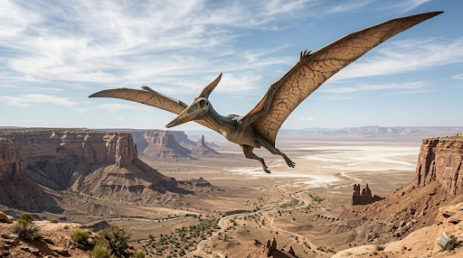

קוואצלקואטלוס
The Feathered Serpent: Quetzalcoatlus northropi

תיק מחקר: נתונים אבולוציוניים משולבים
תקופת פעילות
לפני כ-68 עד 66 מיליון שנה
תור הקרטיקון המאוחר (גיל המאסטריכטי). חי במקביל לטי-רקס ולטריצרטופס, עד להכחדת הדינוזאורים.
מסה ומשקל
200 עד 250 קילוגרם
קל משקל באופן קיצוני ביחס לגודלו. עצמותיו היו חלולות לחלוטין ודקיקות כמו נייר (עובי של מילימטרים בודדים).
ממדים (מוטת כנפיים וגובה)
מוטת כנפיים 10-11 מטרים!
כשהיה על הקרקע ועמד על ארבע גפיו, הוא התנשא לגובה של כ-5.5 מטרים – גבוה כמו ג'ירפה מודרנית.
מיקום גיאוגרפי
טקסס, אמריקה הצפונית
המאובנים נמצאו בתצורת הסלע Javelina בטקסס. בניגוד לפטרוזאורים אחרים שחיו ליד הים, הקוואצלקואטלוס חי עמוק ביבשה, במישורי הצפה של נהרות עתיקים.
סיווג טקסונומי קריטי
זוחל מעופף - פטרוזאור (Pterosauria / Azhdarchidae)
חשוב להדגיש: הקוואצלקואטלוס אינו דינוזאור, אלא בן למשפחת ה"אזדרקיים" (Azhdarchidae) - קבוצת הפטרוזאורים הענקיים והאחרונים שהתאפיינו בצוואר חסר פרופורציות, רגליים ארוכות, ומקור חסר שיניים.
01 // ניתוח אטימולוגי נרחב
| החלק בשם | שפת מקור | פירוש ומשמעות היסטורית |
|---|---|---|
| Quetzal- | נאוואטל (שפת האצטקים - Quetzalli) | נוצה צבעונית / ציפור קדושה מתייחס ל"קצאל" - ציפור מרכז-אמריקאית יפהפייה. |
| -coatlus | נאוואטל (Coatl) | נחש (Serpent) השם הוענק ב-1975 על ידי הפלאונטולוג דאגלס לוסון. צירוף המילים (קצאלקואטל) הוא שמו של אחד האלים החשובים ביותר במיתולוגיה האצטקית והטולטקית – **"נחש הנוצות"** (The Feathered Serpent) שהיה אל השמיים והרוח. |
| northropi | לטיניזציה של שם משפחה | לכבודו של ג'ון נורת'רופ (John K. Northrop) שם המין הוקדש לג'ון נורת'רופ, חלוץ תעופה אמריקאי ומייסד חברת מטוסי "נורת'רופ". הוא היה מהנדס אווירונאוטי שקידם מטוסים בעיצוב של "כנף מעופפת" בלבד, צורה שהזכירה לחוקרים את מבנה הכנפיים העצום של הפטרוזאור הזה. |
02 // תולדות הגילוי ומצב הממצאים: אוצרות שבירים
התגלית של דאגלס לוסון (1971)
הסיפור של ענק השמיים החל בשנת 1971, בערבות הצחיחות של טקסס (בתחומי הפארק הלאומי "ביג בנד"). סטודנט צעיר בשם דאגלס לוסון סייר באזור ונתקל בעצמות מוזרות. לאחר ניקוי במעבדה, התברר שאלו עצמות כנף של זוחל מעופף בגודל שאיש לא האמין שאפשרי. גילוי זה הכפיל כמעט בבת אחת את הגודל המקסימלי הידוע של בעלי חיים מעופפים.
אתגר החפירה של עצמות הנייר
חפירת המאובנים של הקוואצלקואטלוס היא משימה מהקשות בפלאונטולוגיה. עצמותיו היו בנויות כצינורות אוויר מחוזקים במוטות פנימיים דקיקים (ליצירת חוזק ללא משקל). הדפנות החיצוניות היו בעובי של 1-2 מילימטרים בלבד! חלק מהעצמות התפוררו לאבק אם לא ייצבו אותן מיד בשטח בעזרת דבקים וכימיקלים.
מצב הממצאים: פתרון תעלומת השלדים והגולגולת
כדי להבין את האנטומיה של חיה כה ענקית ושבירה, המדענים נאלצו להסתמך על השוואות בין שני מינים שונים שנמצאו בטקסס:
- 1. האם נמצא מאובן שלם? (הפער בין הענק לקטן) התשובה היא **לא עבור המין הענק, אבל כן עבור מין קטן יותר**. עבור המין הענק המפורסם (*Q. northropi* בעל מוטת 11 המטרים), מעולם לא נמצא שלד שלם; נמצאו רק עצמות זרוע וכנף, חוליות צוואר מסוימות וחלקים מרגליים, כיוון שעצמותיו הדקות נמחצו בקלות לאחר מותו. עם זאת, במרחק של כ-40 ק"מ משם, התגלתה מחצבה ובה שלדים כמעט שלמים (60%-70%) של קרוב משפחה קטן יותר בשם *Q. lawsoni* (מוטת כנפיים של כ-4.5 מטרים). המדענים מבצעים שחזור (Scaling) על בסיס השלדים השלמים של המין הקטן כדי להבין את מבנה המין הענק.
- 2. כמות הממצאים הכוללת: המין הענק (*northropi*) נדיר מאוד – ידועות למדע **דגימות בודדות בלבד** (פחות מ-10 פרטים). אולם, מהמין הקטן יותר (*lawsoni*), נמצאו עצמות השייכות ל**למעלה מ-300 פרטים שונים**, מקובצים יחד. כמות אדירה זו מצביעה על כך שהם חיו, נדדו או קיננו בלהקות עצומות.
- 3. מצב הגולגולת: האם מצאו אחת שלמה? גם כאן, **גולגולת שלמה של המין הענק מעולם לא נמצאה.** אך המין הקטן בא לעזרת המדע שוב: נמצאו **מספר גולגולות שלמות כמעט לחלוטין** של *Q. lawsoni*. מסריקה של גולגולות אלו אנו יודעים שהן היו צרות להפליא, ארוכות, ובעלות **מקור חד וחלק לחלוטין - ללא שיניים כלל**. בראש הגולגולת הייתה כרבולת עצם צינורית דקה. הגולגולת של המין הענק מחושבת על בסיס פרופורציות אלו, וככל הנראה הגיעה לאורך מבהיל של כמעט 3 מטרים.
אקולוגיה וביומכניקה: המטוס החי והציד ביבשה
במשך שנים חשבו שפטרוזאורים דאו מעל לאוקיינוסים וצללו לתפוס דגים. אולם, הקוואצלקואטלוס הפריך את התיאוריה הזו לחלוטין עבור משפחתו.
תזונה (Carnivore) ואורח חיים כ"חסידת אימים"
הוא חי במרחק עצום מהים, במישורי נהרות רחבים ויערות. צווארו היה ארוך מאוד אבל נוקשה (לא התעקל כמו של ברבור), ורגליו האחוריות היו ארוכות.
אנטומיה זו הובילה להסכמה שהקוואצלקואטלוס צד בעיקר על הקרקע! הוא טייל לאיטו כמו **חסידת מראבו עצומה**, והשתמש במקור הענק והחד שלו כדי "לשלוף" מהקרקע ומהסבך יונקים קטנים, דו-חיים, דגים בגדות הנהר, ואפילו גורי דינוזאורים. הוא בלע את טרפו בשלמותו כיוון שלא היו לו שיניים ללעוס.
ביומכניקה של המראת המטוס
החידה הגדולה הייתה: איך יצור במשקל 200 ק"ג ובגובה 5 מטרים הצליח להמריא? ציפור בגודל כזה הייתה זקוקה לשרירי חזה כה מאסיביים שלא הייתה יכולה להתקיים.
**הפטנט: המראה ארבע-רגלית (Quadrupedal Launch).** מודלים ממוחשבים פתרו את התעלומה: הפטרוזאורים הלכו על הקרקע על כל ארבע גפיהם (כנפיים מקופלות לאחור). שרירי המנוע העיקריים שלהם היו באזור הכתפיים. כשרצו להמריא, הם השתמשו בזרועותיהם הקדמיות החזקות כ**מקלות קפיצה במוט (Pole-vaulting)**. הם דחפו את הקרקע בחוזקה עם האצבעות הקדמיות, וזינקו כמו קפיץ לשמיים, תוך פרישת הכנפיים. באוויר, הם דאו על גבי זרמים תרמיים ויכלו לחצות יבשות שלמות כמעט ללא מאמץ.